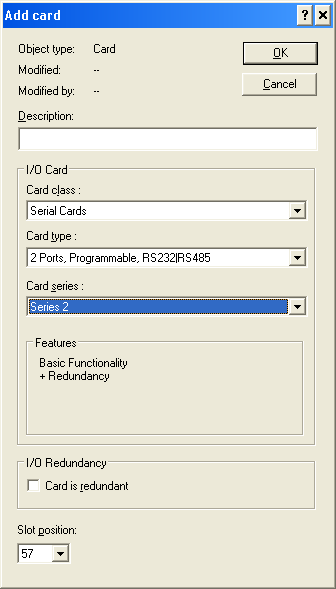

Create a serial card for VIM
Create a card by right-clicking the I/O folder under a controller and selecting New Card from the context menu. If you can auto-sense the VIM it is not necessary to manually create the cards.

On the Add card dialog do the following:
- Enter a description, if desired.
- In the Card class field, select Serial Cards.
- In the Card type field, select 2 Ports, Programmable, RS232|RS485.
- In the Card series field, select Series 2.
- Select the Card is redundant check box, if you are configuring a redundant card.
- Select the correct Slot position for the card.
- Click OK to accept your changes and close the dialog.